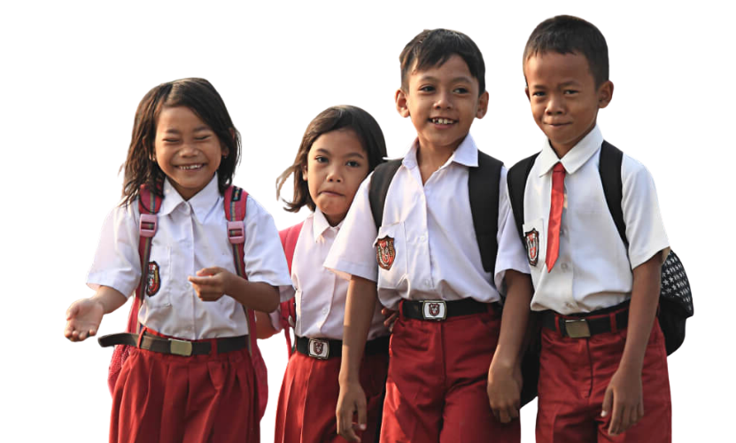

SDGs 4: Pendidikan Berkualitas fokus pada kualitas dan pemerataan pendidikan bagi semua anggota negara secara adil dan merata. SDGs ini berfokus pada peningkatan kualitas SDM dan kesiapan generasi muda untuk masa depan yang mendatang supaya mereka akan mampu mengelola dan mengatur dunia dengan baik.
Setiap anak menerima dan mendapatkan pendidikan dan sekolah minimal dari SD (Sekolah Dasar) sampai SMA (Sekolah Menengah Akhir). Selain itu, setiap anak seharusnya mendapat kesempatan yang sama dalam mencapai cita-cita mereka tanpa batasan RAS, suku, agama, kondisi ekonomi, kondisi fisik dan lain-lain.
Dengan proses pembelajaran yang inklusif, siswa diberi kesempatan untuk menjadi lebih aktif dan untuk mengembangkan potensi diri. Selain itu, pembelajaran inklusif juga tidak membedakan satu sama lain dan memberi semua siswa yang ada pada ruang kelas kesempatan yang sama.
Pendidikan gratis akan sia-sia jika pendidikan yang diberikan tidak diajarkan atau dilakukan secara baik, efektif, dan sungguh-sungguh edukatif bagi siswa. Proses pembelajaran dan edukasi yang diberikan harus berkualitas dan dapat digunakan untuk masa depan anak tersebut dan memaksimalkannya.
Melalui video yang kelompok saya buat, kami ingin menekankan kepentingan kualitas pembelajaran. Jika anak mendapatkan pendidikan namun pendidikannya tidak berkualitas atau tidak dilakukan secara maksimal, pendidikan yang diterima anak tersebut pasti tidak akan maksimal. Pada video ini, kelompok saya menunjukkan beberapa tips belajar supaya siswa dapat belajar secara lebih efektif, efisien, dan berkualitas. Kami menunujukkannya melalui video dan poster. Beberapa teknik pembelajaran yang kami tunjukkan adalah flashcards, Feynman Technique, Pomodoro, dan blurting.
Kelompok saya mengambil konklusi bahwa pendidikan yang rata akan sia-sia jika tidak dilakukan secara baik dan efisien. Masalah ini sebetulnya bisa diatasi dengan SDM guru yang lebih baik di sekolah negeri dari pemerintah, proses dan metode pembelajaran oleh guru yang menarik dan membantu, siswa yang semamgat untuk belajar dan sungguh-sungguh berusaha, serta fasilitas pembelajaran yang kondusif, mendukung proses pembelajaran, dan membantu siswa dalam mencapai cita-cita mereka.